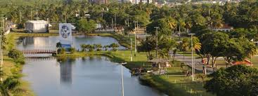

Sementeira

O parque pode ser utilizado pelos aracajuanos e turistas para a prática de atividades esportivas e de lazer, pesquisas ambientais álem de outras atividades em contato com a natureza. O espaço conta
Atrativos da Sementeira
- Parque infantil
- Campo de futebol
- Quadra poliesportiva
- Aparelhos para exercicios fisicos
- Pista para caminhada
- Quiosques para piqueniques
- Sanitários
- Lagos e áreas verdes
- Iluminação adequeda para visitas noturnas